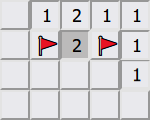

In this Documentation you are gonna learn how to Minesweeper:
Input:
With the Input you can customize the dimensions and difficulty of Minesweeper:

How to Play:
This is how the default minefield looks like with unrevealed tiles:


How to win:
You need to reveal all the tiles that dont have a bomb:
You can encounter:
| A bomb |  |
Means Gameover

|

|
| Nothing |  |
Will reveal all other empty tiles around it and their adjacents. Like this → | |
| A number |  |
Shows number of adjacent mines around it. Some examples to demonstrate that ↓ |
|
2 adj mines:
fully revealed:
example with 3:
revealed:
|
|||
| Use the numbers to figure out where the bombs are and step around them or flag them. |
|
A win could look like this:

|
| Additionally a win alert will pop up and congratulate you. |
Features that make life easier:
 on a tile with
on a tile with

You can win without flags but they will help you remember and you need them to use the next feature:
This, a little more advanced feature, enables you to click on a number to reveal its surrounding tiles,
if the amount of adjacent flags is the same as the clicked number.
That means if you click this 2:
→
Because there are
→
|
But it can also be your downfall:
Because, if your flag is wrong, then this feature will reveal a bomb and you loose.
.
The last feature is for when you already lost:
For you to be able to fully analyse your exploding,
there will be green and red backgrounds that indicate wether or not a flag you placed was on a bomb.
Those green bombs you discovered are unexplodable.
But if you like, you can still explode all the other mines. For fun.